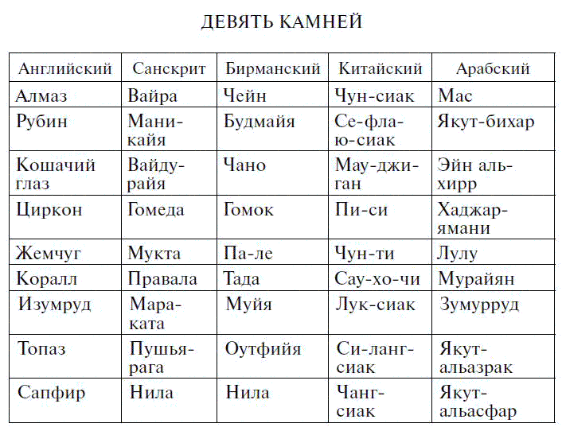

Религиозное применение драгоценных камней

Использование камней для украшения статуй богов и в религиозных церемониях, особенно похоронах, уходит корнями в глубокую древность. Это религиозное использование драгоценных камней можно рассматривать как естественное развитие первоначальной веры в их талисманные свойства. Если в камне проявляется какая-либо сверхъестественная сущность, какой более подходящий предмет можно придумать для украшения статуй богов или гравирования текстов из священных писаний, а также в качестве «паспортов», обеспечивающих благополучное попадание душ умерших в лучший мир?
Хотя минералы фактически повсеместно использовались в религиозных целях, первые случаи, известные нам, имели место в Египте и связаны с египетским обычаем гравировать тексты из самого древнего ритуального сочинения Книги мертвых на полудрагоценных камнях, из которых вырезались всевозможные символические фигурки. Эта Книга мертвых, состоящая из нескольких отдельных глав, каждая из которых самостоятельна, описывает переход души умершего через царство мертвых. Здесь душа обращается к богам и другим существам, которые ее принимают, а молитвы и обращения, приводимые в главах, должны обеспечить благополучный переход и защиту от зла и всяческих препятствий.
Одним из самых распространенных гравированных амулетов является «тет» – пряжка шейного платка. Она делалась обычно из красной яшмы, карнеола, красного порфира, красного стекла, фаянса или смоковницы. Дерево символизировало кровь Изиды, а на амулетах иногда гравировали 156-ю главу Книги мертвых; их вешали на шею мумии. Выгравированная формула была следующая:
«Глава на пряжке из карнеола, которую кладут на шею умершего.
Кровь Изиды, добродетель Изиды; магическая сила Изиды; магическая сила Глаза защищают этого Великого; они предотвращают любой вред, который может быть ему причинен».
Эту пряжку из карнеола окунали в сок смоковницы, вправляли в футляр из смоковницы и клали на шею умершего.
«Того, кто читает эту главу, защищает добродетель Изиды; Гор, сын Изиды, с радостью видит его, и ни один путь для него не закрыт».
Еще один амулет представляет собой стол каменщика и слово, означающее «твердость, стабильность, сохранность». Эти фигурки, сделанные из фаянса, золота, карнеола, ляпис-лазури и других материалов, клали на шею мумии, чтобы обеспечить ей защиту.
«Папирусный скипетр», «уат», считавшийся эмблемой вечной молодости, обычно вырезался из непрозрачного изумруда или изготовлялся из фаянса того же цвета. Уат означает «зелень, цветение». Когда его помещали на шею мумии, то надеялись, что умершему будет хорошо в царстве мертвых. В 159-й главе Книги мертвых говорится об уате из жильного изумруда; он считался даром Тота и защищал конечности умершего.
Амулет в виде подушки, «урс», обычно делался из гематита. Иногда на нем гравировалась 166-я глава Книги мертвых. Доктор Бадж перевел ее так:
«Встань из небытия, о Поверженный! Они следят за тобой с высшего горизонта. Ты победил своих врагов; ты торжествуешь над теми, кто был против тебя, как Гор, мститель за своего отца, Озирис[90] заставил это сделать для тебя. Ты отрезаешь головы своим врагам; они же никогда не снесут тебе голову. Поистине Озирис убивает своих врагов и выбрасывает их головы, чтобы они никогда не могли снести ему голову».
Из всех амулетов чаще всего встречается амулет в форме сердца – «аб». Они бывают сделаны из карнеола, зеленой яшмы, базальта, ляпис-лазури и других твердых материалов. Сердце, считавшееся в Древнем Египте вместилищем жизни, было предметом особой заботы после смерти. Заключив в специальный футляр, его хоронили вместе с мумией. Считалось, будто только после этого в преисподней достигалось равновесие: сердце вновь обретало свое место в теле умершего. Сердце символически изображалось в виде скарабея.
Прекрасный образец сердцеобразного амулета вырезан на одной стороне статуи богини Нейт с птицей феникс, эмблемой воскрешения, и на нем написана глава о сердце.
В следующем отрывке Книги мертвых приводится формула, которую произносили над погребальным скарабеем из твердого камня, вероятно ляпис-лазури. Египетская традиция приписывает эту главу к правлению Семти, пятого фараона I династии, примерно 4400 год до н. э.
«Глава о том, что человеческому сердцу не позволено противостоять ему в божественных краях загробного мира.
Мое сердце, доставшееся мне от матери, мое сердце, необходимое для моего земного существования, не восставай против меня, не свидетельствуй против меня перед верховными божествами; не отделяйся от меня перед великим богом Аменти. Приветствую тебя, о сердце Озириса, обитающее на западе! Приветствую вас, боги с заплетенными бородами и величественными скипетрами! Говори хорошо об Озирисе… пусть он преуспевает с помощью Нехбке. Я воссоединился с землей, я не умер в Аменти. Я чистый дух вечности».
Над скарабеем, сделанным из твердого камня, оправленным в золото и помещенным на сердце человека после помазания, произносится следующее магическое заклинание:
«Мое сердце, доставшееся мне от матери, мое сердце необходимо мне для преображения. Возьми еду, обойди вокруг бирюзовой чаши и иди к тому, кто в храме и от кого происходят боги».
Самое древнее написание этого особенно любимого текста есть в Британском музее, на нижней стороне скарабея. Там же в рамке начертано имя фараона XIV династии Себак-эм-сафа, 2300 год до н. э. Скарабей сделан из исключительно красивого куска зеленой яшмы. Тело и голова жука тщательно вырезаны из камня, а ноги из золота рельефной резьбы.
Скарабей вправлен в золотую табличку и найден мистером Солтом в Курне (Тебес). Поскольку полагали, что зеленая яшма обладает исключительными свойствами амулета, именно этот скарабей, вероятно, считался особенно священным.
Со временем стало правилом гравировать некоторые специальные главы из Книги мертвых, в том числе и те, в которых содержится обращение к сердцу, на определенных камнях. Например, 26-я глава гравировалась на ляпис-лазури, 27-я на полевом шпате, 30-я на змеевике, а 29-я на карнеоле. Вероятно, первоначально признавалась какая-то связь между богом, к которому обращен текст, и драгоценным камнем, на котором этот текст выгравирован.
Амулет огромной силы представлял собой глаз из ляпис-лазури, украшенный золотом; на нем гравировалась 140-я глава Книги мертвых. В последний день месяца Мехир перед этим символическим глазом приносилось в дар «все хорошее и священное», потому что считалось, будто именно в этот день верховный бог Ра возлагает на свою голову это изображение. Иногда эти глаза делались из яшмы, и их можно было класть на любую часть мумии.
Об изображении Истины из ляпис-лазури, которое носил египетский верховный жрец, Элиан говорит, что он бы предпочел, чтобы судья носил с собой Истину не в изображении, а в своей душе.
Среди ассирийских текстов, приводящих формулы заклинаний и различных магических манипуляций, есть один, в котором говорится об украшении, состоящем из семи сверкающих камней. Цари носили его на груди как амулет. Достоинства этих камней были настолько высоки, что они могли бы украшать богов. Фоссе перевел текст так:
ЗАКЛИНАНИЕ
Сверкающие камни! Великолепные камни! Камни изобилия и радости.
Станьте сверкающей плотью богов.
Камень хулалини, камень сиргарру, камень хулалу, камень санду, камень укну.
Камень душу, драгоценный камень элмешу, совершенный в неземной красоте.
Камень пингу, оправленный в золото
И помещенный на блестящей груди царя, как украшение.
Азагсуд, верховный жрец Бела, сделай его сияющим, сделай его сверкающим!
Пусть зло покинет это жилище!
Названия двух драгоценных камней, хулалу и хулалини, говорят о том, что они принадлежали к одному классу. Поскольку основное значение корня, образующего эти названия – «просверливать», можно предположить, что речь идет об ассирийском обозначении жемчуга, который в древности считался камнем. В арабском языке просверленный жемчуг имеет особое название, отличающее его от непросверленного, или «девственного», жемчуга. Все, что известно о санду, – это то, что он, должно быть, был темным камнем. Укну – это, конечно, ляпис-лазурь. В табличках Тель-эль-Амарны часто упоминается, что цари Вавилонии и Ассирии посылали их в дар египетским фараонам, а последние – дружественно настроенным азиатским монархам. О сиргарру и душу вообще ничего не известно, а элмешу, седьмой в списке, очевидно, считался самым блестящим и великолепным из них; профессор Фридрих Делич[91] осмелился пред положить, что это алмаз. Во всяком случае, этот камень, должно быть, вставляли в кольца и считали очень ценным, потому что в ассирийском тексте встречается следующий пассаж: «Как кольцо с элмешу, я буду сиять в твоих глазах». Описанный как камень «небесной красоты», это также мог быть и сапфир.
Представление о магических свойствах украшения из семи камней, вероятно, пришло из Вавилонии, где цифра 7 считалась священной. Как показано далее, имелись некоторые причины приписывать индийское происхождение девяти камням, «покрывающим» царя Тира и перечисленным Иезекиилем, тогда как нагрудник эфода еврейских первосвященников с двенадцатью камнями, символизирующими двенадцать месяцев года, появился позже, вероятно во время возвращения из вавилонского плена и строительства Второго храма. Конечно, исторические и пророческие книги Ветхого Завета ничего об этом не говорят, хотя в них упоминаются Урим и Тумим. Подробное описание их дается в Книге Исхода.
В очень древнем ассиро-вавилонском эпическом повествовании говорится о том, как богиня Иштар спустилась в Гадес. Стражи этого адского места обязали богиню оставлять что-то из одежды и украшений у каждых из семи ворот, сквозь которые она проходила. В пятых воротах она, говорят, оставила кушак из абан-алади, или камней, помогающих при родах. Утверждают, и, вероятно, не без причины, что из многих минералов, якобы обладающих этим свойством, раньше всего заговорили о жаде (нефрите), или жадеите.
В вавилонских легендах рассказывается о деревьях, на которых растут драгоценные камни. В эпосе о Гильгамеше описан таинственный кедр. Он рос в святилище эламитов, Ирнини, и находился под охраной царя эламитов Хумбабы. Описание этого дерева гласит:
Оно производит камни «самту» как плоды;
Его сучья увешаны ими, великолепными для зрения;
Крона его производит лазурит;
Его плоды приятны для взгляда.
Еще одно дерево, на котором растут драгоценные камни, Гильгамеш увидел, пройдя сквозь тьму в течение двенадцати часов. Судя по следующему описанию, сделанному клинописью на глиняной табличке, это был самый яркий предмет:
Оно рождает драгоценные камни, как плоды,
Его ветви были сияющими для зрения,
Мелкие веточки были хрустальными,
Оно рождает плоды, приятные для взгляда.
Один из самых редких и значительных экземпляров, иллюстрирующих использование ценных камней в религиозных церемониях языческого мира, хранится в коллекции Моргана – Тиффани. Это старинный вавилонский топор из полосчатого агата. Расположение слоев в этом агате настолько правильно, что его можно назвать ониксом. В нем превалирует красно-коричневый цвет, а заметные теперь белые пятна, очевидно, вызваны действием огня или какой-нибудь щелочи. На обухе надпись архаичной клинописью, вероятно, на так называемом шумерском языке, на котором, как полагают, говорили создатели вавилонской цивилизации. Судя по форме надписи, предмет можно отнести к более раннему периоду, чем 2000 год до н. э.
Хотя буквы написаны четко и их можно легко расшифровать, перевести надпись все же очень сложно. Ясно, что топор был принесен неким правителем по имени Аддугиш в дар какому-нибудь божеству; но был ли это бог Шамаш (бог-солнце), бог Адад или какой-то другой бог вавилонского пантеона, точно определить нельзя. Французский ассириолог Франсуа Ленорман, в 1879 году первым описавший этот топор, и профессор Айра Морис Прайс из семитского отделения Чикагского университета допускают, что это мог быть дар Ададу – богу погоды, громовержцу; символ топора был бы для него более уместен, так как почти все первобытные народы ассоциировали каменные топоры и клиновидные камни с ударом молнии, а следовательно, и с божеством, которое, как они полагали, посылает ее на землю.
Этот шумерский топор достигает 134,5 мм в длину (5,3 дюйма), 35,5 мм в ширину (1,4 дюйма) и 31 мм в толщину (1,22 дюйма). Первоначально он принадлежал кардиналу Стефано Борджиа (1731–1804), в течение некоторого времени бывшему секретарем Коллегии пропаганды веры в Риме, который, вероятно, приобрел его у какого-то миссионера, совершившего путешествие на Восток. Из семьи кардинала он был продан за 15 000 лир (3000 долларов) в коллекцию Тышкевича, а когда предметы из этой коллекции были выставлены на публичную продажу, автор 16 апреля 1902 года приобрел его для Американского музея естественной истории в Нью-Йорке.
В Аликанте, Испания, на пьедестале древней статуи, предположительно статуи Изиды, обнаружили надпись, содержащую список даров, принесенных по божественному повелению некой Фабией Фабианой в честь ее внучки. Очевидно, любящая бабушка отдала свои лучшие драгоценности, которые украшали статую. Они состояли из диадемы с «унио» (большой круглой жемчужиной) и шестью жемчужинами помельче, двух изумрудов, семи бериллов, двух рубинов и гиацинта. В каждое ухо статуи была вдета серьга с жемчугом и изумрудом; на шее висело ожерелье из четырех рядов камней, а именно восемнадцати изумрудов и тридцати шести жемчужин. В двух ножных браслетах, украшающих лодыжки, было по одиннадцати бериллов и по два изумруда, а в двух ручных браслетах по восемь изумрудов и по восемь жемчужин. Украшение дополняли четыре кольца, два с изумрудами, а два, на мизинцах, с бриллиантами. На сандалиях восемь бериллов.
Замечательным примером античного подношения является ожерелье из драгоценных камней, подаренное статуе Весты. Зосима[92] приписывает трагический конец вдовы Стилихо, Серены, тому, что она сняла это ценное украшение со статуи Весты, и находит в ее смерти некую поэтичную справедливость, потому что она была задушена шнуром, находившимся у нее на шее.
Упоминание драгоценных камней для сравнения с ними религиозных добродетелей встречается не только в трудах отцов христианской церкви, но и в буддистских писаниях. В «Вопросах царя Мелинды», написанных, вероятно, в III веке н. э., встречается следующий пассаж:
«Верно, о царь, как то, что алмаз чист во всех отношениях, точно так, о царь, будет усердный бхикку (монах), искренний в побуждениях, совершенно чистым в своей жизни. Это, о царь, первое качество алмаза, которым должен он обладать.
И снова, о царь, как алмаз не может быть сплавлен с другим веществом, точно так, о царь, усердный бхикку, искренний в побуждениях, никогда не смешает дурного человека с друзьями. Это, о царь, второе качество алмаза, которым должен он обладать.
И еще, о царь, как алмаз вставляется в оправу вместе с наиболее ценными самоцветами, точно так, о царь, будет усердный бхикку, искренний в побуждениях, общаться с теми, кто имеет высочайшее превосходство, с теми, кто проник в первую, вторую и третью ступени Благородного Пути, с драгоценными сокровищами Арахатса, отшельниками утроенной мудрости или шестикратной проницательности. Это, о царь, третье качество алмаза, которым должен он обладать. Так как это было сказано, о царь, Благословенным богом[93] над всеми богами в Сутта Нипата:
Да соединится чистое с чистым,
И будет крепко даже в памяти;
Живи гармонично и мудро, и все неприятности рассеются».
Описание Нового Иерусалима в Книге Откровений имеет любопытную параллель с индийскими Пуранами.[94] В них говорится, что бог Кришна, восьмое воплощение Вишну, пребывал в замечательном городе Двараке, куда к нему приходили различные боги и духи.
«Боги, Асурас, Гандхарас, Киннарас, начали стекаться в Двараку, чтобы увидеть Кришну и Валараму. Некоторые спускались с неба, некоторые со своих колесниц и, укрывшись под смоковницей, любовались несравненной Дваракой.
Город был квадратный, размером в сто „йоджанас“, и сверх меры был украшен жемчугом, рубинами, бриллиантами и другими драгоценными камнями.
Он располагался высоко, был украшен самоцветами и уставлен куполами из рубинов и алмазов с колоннами из изумруда и дворами из рубина. В нем насчитывалось огромное количество храмов. Перекрестки улиц были выложены сапфирами, а дороги сверкающими самоцветами. Он сиял, словно летнее солнце в зените».
По сравнению с описанием Нового Иерусалима в Книге Откровений в индийском описании Двараки нельзя не заметить отсутствия определенности. Вместо хорошо упорядоченной схемы размещения цветов, представленной двенадцатью камнями, соответствующими двенадцати коленам Израиля, таинственный индийский город представляет собой просто яркую массу самых блестящих драгоценных камней, известных в Индии.
Поэтическое описание королевского города Кусавати, приведенное в «Маха Судассана Суттанта», вероятно, происходит от какого-нибудь предания, в котором речь идет об Эсбатане или Вавилоне. Кусавати окружали семь крепостных валов, соответственно из золота, серебра, берилла, хрусталя, агата, коралла и, наконец, «всевозможных самоцветов». В каждом валу было по четверо ворот – одни из золота, одни из серебра, одни из хрусталя и одни из нефрита, а каждые ворота украшали семь колонн, в три или четыре раза больше человеческого роста, сделанные из тех же камней, что и валы. За крепостными валами росло семь рядов пальм. Деревья, росшие в четвертом ряду, имели стволы из серебра, листья и плоды из золота. За ними следовали пальмы из берилла с листьями и плодами из берилла; потом шел смешанный ряд из агатовых пальм с листьями и плодами из коралла и коралловых пальм с листьями и плодами из агата; и, наконец, пальмы, стволы которых состояли из «всевозможных самоцветов», как и их листья и плоды. «Когда ветер тряс эти деревья, раздавался звук нежный, приятный, чарующий и пьянящий».
В греческой литературе также описан «город из драгоценных камней» – а именно столица Острова блаженных, описанная Лукианом в его «Правдивой истории». Стены этого города были из изумруда, храмы богов из берилла, а алтари в них из цельных огромных аметистов. Сам город, весь из золота, служил достойной оправой этим чудесным камням.
В индийской мифологии есть рассказ об удивительном бассейне из хрусталя, работе бога Майя. Его дно и стены были инкрустированы прекрасными жемчужинами, а в середине располагалась площадка, сверкающая самыми роскошными драгоценными камнями. Хотя в нем не было воды, прозрачный хрусталь создавал иллюзию воды, и тем, кто подходил к бассейну, хотелось нырнуть и искупаться, как им казалось, в чистой, свежей воде.
Дерево Калпа в индуистской религии, символизирующее дары богам, описано индийскими поэтами как сверкающая масса драгоценных камней. С его сучьев свисали жемчужины, а с побегов – прекрасные изумруды; нежные, юные листочки были из кораллов, а спелые плоды из рубинов. Корни дерева были сапфировыми, основание ствола – алмазным, средняя часть – из топаза, а верхняя – из кошачьего глаза. Листва, кроме молодых листьев, состояла целиком из цирконов.
Китайский буддийский пилигрим Хейен Цанг, посетивший Индию между 629 и 645 годами н. э., рассказывал о замечательном «алмазном троне», который, согласно легенде, когда-то стоял возле Древа познания, под раскидистыми ветвями которого, говорят, Гаутама Будда впитывал первые откровения истины. Этот трон был создан в эпоху, называемую «Калпой мудрецов», одновременно с рождением земли, и его фундамент находился в центре вселенной; в окружности он достигал сотни футов и состоял из цельного алмаза. Когда вся земля содрогалась от бури или землетрясения, этот великолепный трон оставался неподвижным. На нем восседали тысяча Будд, и все они впадали в «алмазный экстаз». Однако к тому времени, как мир вступил в нынешний век, песок и земля засыпали «алмазный трон», и он больше не доступен для человеческого глаза.
В «Калпа Сутре», написанной на пракрите,[95] одной из священных книг джайнов,[96] соперников буддистов, говорится, что Харинегамеши, божество, главенствующее в нижней группе богов, захватил четырнадцать драгоценных камней, главным из которых был «вайра», алмаз, и, отбросив грубые (материальные) частицы, оставил только его тонкую сущность, которая помогала ему в превращениях. В той же «Калпа Сутре» приводится следующее яркое описание украшений невероятно красивой богини Шри:
«На всех частях ее тела сверкали украшения и безделушки, состоящие из многочисленных драгоценных камней, желтого и красного золота. Ее чистые, чашеобразные груди окружали венки из цветов кунда, в которые были вплетены нитки жемчуга. На шее ее красовались нитки жемчуга, сделанные талантливыми и усердными художниками, ожерелье из драгоценностей с нитками динаров, а колеблющиеся, сияющие серьги свисали до роскошных плеч. Но красота и очарование этих украшений лишь подчеркивали красоту ее лица».
На прекрасной китайской вазе тончайшей работы из белого нефрита вырезано восемь аистов, у каждого из которых в клюве атрибут одного из восьми даосистских Бессмертных.[97] Среди них имеется двойная тыква – атрибут самого могущественного из этих полубогов, известного под именем Ли с Железным Костылем, за помощью к которому обращались колдуны и астрологи. Есть волшебный меч, с которым Лу Тьюнгпин победил духов зла, блуждающих по Китайской империи в виде ужасных драконов; корзина с цветами, атрибут Лан Цайхо, покровителя садовников и цветоводов; королевский веер, употреблявшийся Хан Чунгли из династии Чау (1122–1220 гг. до н. э.) для оживления душ умерших; цветок лотоса, символ девы Хо Шиенку, почитаемой как святая покровительница китайских домашних хозяек и которая обрела дар бессмертия с помощью порошка из измельченного нефрита и перламутра; бамбуковые трубки и пруты, которыми могущественный чародей Чанг Куо, покровитель художников, вызывал души умерших; флейта покровителя музыкантов Хан Шиенгцу, обязанного своим бессмертием ловкости, с которой сумел войти в даосистский рай и сорвать персик со священного дерева жизни; и, наконец, музыкальные палочки (род кастаньет), трещотки Цао Куочина, особенно почитаемого китайскими актерами.
Господствующее в Индии поверье, что сокровища, подаренные изображениям или гробницам богов, принесут счастье щедрому дарителю, находит свое выражение во многих древних и современных произведениях индийской литературы. В «Ригведе»[98] говорится, что, «даря золото, даритель получает жизнь, полную света и красоты». В «Сама-веда Упанишад» написано: «Дарители высоко возносятся на небо. Те, кто дарит солнце, живут сообща с солнцем; дарители золота получают вечную жизнь; дарители одежды живут на луне». Еще в одном тексте («Хаити Смирити») читаем:
«Поднесший коралл подчинит себе все три мира. Тот, кто почтит Кришну рубинами, в новой жизни станет могущественным императором; если это маленький рубин, он заново родится царем. Подношение изумрудов приведет к познанию души и вечности. Тот, кто дарит алмаз, достигнет невозможного, или нирваны, то есть вечной жизни высоко в небесах. Если человек в течение месяца преподносит цветок из золота, он станет таким же богатым, как Кувера, покровитель рубинов, а впоследствии достигнет нирваны и мусквы, то есть спасения».
В Мултане, одном из древнейших городов Индии, расположенном в штате Пенджаб, в 164 милях к юго-западу от Лахора, в индуистском храме есть идол с глазами из двух огромных жемчужин. Глаза грубого изображения Джаганатха в Пури, Бенгалия, говорят, когда-то были сделаны из драгоценных камней, как и глаза идолов Вишну в Чандернагоре и в огромном семистенном храме в Шрирангаме, откуда, похоже, был украден бриллиант «Орлов».
В церемониале подношения индусы признавали шестнадцать подношений, девять из них составляли драгоценные камни, а о равноценном вознаграждении дарителю написано в «Бхагават Пуране», где Кришна говорит: «Все лучшее и самое ценное в этом мире и самое дорогое для тебя подари мне, и тебе воздастся в огромном и безмерном количестве». В определенные назначенные дни святые изображения украшались самыми лучшими одеяниями и самыми богатыми драгоценностями из сокровищниц храма, особенно в день рождения почитаемого божества. Однако считалось, что дары сохраняют священное значение только в течение сравнительно короткого времени, от месяца и более для нарядов и одеяний, до десяти или двенадцати лет для драгоценностей, таких как «наоратна» и «панчратна», ценных и почитаемых драгоценных украшений, состоящих соответственно из девяти и пяти камней. «Панчратна» обычно состояло из золота, алмаза, сапфира, рубина и жемчуга. После того как дары переставали быть достойными применения в храмах, их можно было употреблять для оплаты расходов храма, в том числе на содержание многочисленных жрецов и помощников. Поскольку эти предметы все же сохраняли свои священные свойства, их охотно покупали набожные индусы, несомненно считавшие их ценными талисманами. Таким образом, они не только обеспечивали благосклонность богов к дарителю, но и служили одним из основных источников дохода для храмов.
Одна из старейших и, вероятно, наиболее интересных талисманных драгоценностей известна под названием «наоратна» или «нараратна» – драгоценность из девяти камней. Она упоминается в древних индийских трактатах «ратнакастрас» о драгоценных камнях, например в «Нарратнапарикше», где приводится:
Порядок расположения самоцветов в украшении:


Из этого описания видно, что эта драгоценность предназначалась для объединения всех могущественных астрологических влияний. Камни, подбираемые по связи с различными небесными телами и точками пересечения орбит, в некоторых случаях отличаются от тех, что выбирались на Западе. Например, изумруд здесь связан с Меркурием, тогда как в западной астрологии этот камень обычно представлял Венеру, хотя иногда ассоциировался и с Меркурием. Алмаз же посвящается Венере, а не Солнцу, как в западном мире.
В «наоратна» из девяти пять камней называются индусами «магаратнани», или «великими камнями» – алмаз, жемчуг, рубин, сапфир и изумруд. Они связывались с Солнцем, Луной, Венерой, Меркурием и Сатурном, тогда как другие четыре камня, поменьше («упаратнани»), а именно гиацинт, топаз, кошачий глаз и коралл, представляли Марс, Юпитер, Раху и нижнюю точку пересечения орбит. Два последних очень важны в астрологических вычислениях, и их часто называли «Головой дракона» и «Хвостом дракона». Они означали верхнюю и нижнюю точки пересечения орбиты Луны с плоскостью эклиптики, при подъеме Луны на плоскость и опускании под эту плоскость.
В трех довольно неясных пассажах из «Ригведы» упоминается о семи «ратнас». Были ли это драгоценные камни, определить невозможно, поскольку первоначальное значение слова «ратна» – «драгоценный предмет», но не обязательно драгоценный камень; возможно, здесь содержится намек на какую-нибудь раннюю форму талисмана, в которой представлены только Солнце, Луна и пять планет.
Легко понять, что такой талисман, как «наоратна», сочетавший в себе благотворные влияния всех небесных тел, призванных управлять судьбой человека, наверное, высоко ценился, и можно смело предположить, что владеть этим талисманом могли только богатые и могущественные люди. Ведь индусы считали, что свойство каждого камня зависит от его совершенства, поэтому плохие или дефектные камни считались источником несчастья и бед.
Позднее состав этого талисмана несколько изменился. Экземпляр, представленный в индийской части Парижской выставки в 1878 году, состоял из коралла, топаза, сапфира, рубина, плоского алмаза, ограненного алмаза, изумруда, аметиста и карбункула. В нем ограненный алмаз, аметист и карбункул заняли места гиацинта, жемчуга и кошачьего глаза.
Вместо объединения различных планетарных камней в одном украшении, их иногда вставляли по одному в кольцо, носимое в определенный день, название которого происходило от названия соответствующего небесного тела. В биографии Аполлона из Тианы (I в. н. э.), написанной Филостратом, говорится: «Дамис также рассказывает, что Иархас подарил Аполлону семь колец, названных именами планет, и он носил их, одно за другим, в порядке дней недели». Хотя нет точных данных о том, что в кольца вставлялись определенные камни, учитывая обычаи того времени, можно предположить, что так оно и было.

У бирманцев магические свойства девяти драгоценных камней, составлявших «наоратна», шли в строгом порядке: рубин, алмаз или горный хрусталь, жемчуг, коралл, топаз, сапфир, кошачий глаз, аметист, изумруд.[99] То, что рубин, алмаз и жемчуг занимают почетное место, вполне естественно, но отведение шестого места сапфиру после коралла и топаза кажется довольно несправедливым по отношению к этому прекрасному камню.
Желтые пояса, носимые китайскими императорами из династии Манчу, были украшены разнообразными драгоценными камнями в соответствии с ритуалом церемоний, на которых император играл главную роль. Для служб в Храме небес очень уместен выбор украшения из ляпис-лазури, для Алтаря земли желателен желтый нефрит, для жертвы на Алтарь солнца – красные кораллы, а белый нефрит предпочтителен для церемоний перед Алтарем луны. Нефрит различных цветов использовали для шести драгоценных табличек, применяемых в поклонении небу, земле и четырем сторонам света. Для поклонения небесам использовали темно-зеленую круглую табличку, для поклонения земле восьмиугольную табличку из желтого нефрита. Восток почитали зеленой острой табличкой, запад – белой «тигровой» табличкой; север – черной полукруглой табличкой, а юг – табличкой из красного нефрита.
Из всех китайских работ по нефриту самой интересной и выдающейся является «Иллюстрированное описание старинного нефрита», состоящее из ста книг с примерно семьюстами иллюстрациями. Она была опубликована в 1176 году и включает в себя список чудесной коллекции предметов из нефрита, принадлежавшей первому императору из южной династии Сунь. Одно из сокровищ, описанных здесь, – четырехсторонний кусок чистого белого нефрита больше двух футов в высоту и ширину, считавшийся исключительно ценным, потому что внутри его был виден рисунок, выполненный чудесным образом. Это была фигурка, сидящая на циновке, слева от нее цветочная ваза, справа чаша для пожертвований. Фигурка помещалась в центре камня и казалась окутанной облаками. Это было изображение буддийского святого Самантабахадра, а камень, по преданию, был вынесен из священной пещеры в 1068 году мощным таинственным потоком.
Талисманы из нефрита до сих пор очень популярны в мусульманском мире, а у турок они настолько высоко котируются как фамильные ценности, что заполучить какой-нибудь из них очень сложно. Существует ортодоксальная мусульманская секта, члены которой называют себя «пекдаш». Они всю жизнь носят на себе плоский кусочек нефрита как защиту от увечий или любых других неприятностей.
В обряде «рисования на песке» у индейцев племени навахо изображались четыре бога дождя с ожерельями из коралла и бирюзы. Эти четыре бога располагались по четырем направлениям сторон света и раскрашивались соответственно: черным – северное, голубым – южное, желтым – западное, белым – восточное. Вся картина, размерами от десяти до тринадцати футов, охранялась с трех сторон волшебными жезлами, оставляя незащищенной лишь восточную сторону, так как считалось, что в этой стороне живут только добрые духи. У каждого из богов дождя с запястья свисал причудливо украшенный кисет для табака с изображением каменной трубки. Навахо верили, что в этом кисете бог хранит луч солнечного света, которым разжигает свою трубку. Когда он курит, на небе образуются облака и начинается дождь. На песчаной картине, изображающей бога урагана, тот тоже украшен серьгами и ожерельем из бирюзы.
Миссионер Бернардино де Саагун свидетельствует, что во времена ацтеков разновидность бирюзы, считавшаяся красивейшей и самой привлекательной, называлась «бирюзой богов». Никто не имел права владеть ею и носить ее, так как она была посвящена исключительно службе богам как подношение или украшение изображения божеств. Де Саагун описывает эту бирюзу как «красивую, без пятен и очень чистую. Она была очень редкой и привезена в Мексику издалека. Некоторые экземпляры были округлыми, как грецкий орех, разрезанный наполовину, другие широкими и плоскими, а некоторые все в ямках, словно находились в состоянии разложения».
Бог огня Ксиутекутл, или Искокаухкви, считался покровителем обряда протыкания ушей у мальчиков и девочек. Изображение этого бога украшалось серьгами, инкрустированными мозаикой из бирюзы. В левой руке он держал небольшой круглый щит, на котором в виде креста располагались пять больших зеленых камней жадеита, укрепленных на золотой пластине, покрывавшей почти весь щит.
Во время испанского завоевания огромный изумруд величиной почти со страусовое яйцо был предметом поклонения перуанцев в городе Манта и почитался как богиня. Эта «изумрудная богиня» называлась Умина и, как некоторые реликвии христианского мира, выставлялась только по большим праздникам, когда к святилищу со всей страны стекались толпы индейцев с дарами богине. Хитрые жрецы особенно рекомендовали приносить изумруды, говоря, что это дочери богини, которой будет очень приятно увидеть своих детей. Таким образом, огромное количество изумрудов вознаграждало усилия жрецов, а после завоевания Перу эти прекрасные камни попали в руки Педро де Альварадо,[100] Гарсилассо де ла Вега[101] и их соратников. Однако «мать изумрудов» жрецы спрятали так надежно, что испанцам не удалось отыскать ее. Многие другие изумруды были уничтожены из-за невежества или глупости новых владельцев, полагавших, что главное свойство настоящего изумруда – это способность выдерживать сильные удары, а потому клали камни на наковальню и молотом разбивали их на части. На такие действия могло натолкнуть старое и полностью неверное представление, что истинный бриллиант может выдержать такое обращение.
Гарсилассо сравнивал рост изумруда в месторождении с ростом плода на дереве и полагал, что он приобретает свою прекрасную зеленую окраску постепенно, причем первой приобретает цвет часть кристалла, освещенная солнцем.
Он описывает интересный экземпляр, найденный в Перу, одна половина которого была бесцветной, как стекло, а другая блестящей и зеленой, и сравнивал его с недозрелым плодом.
Великолепный скобель из жадеита, известный под названием «скобель Кунца», был найден в Оахаке, Мексика, привезен в Соединенные Штаты примерно в 1890 году и хранится сейчас в Американском музее естественной истории, Нью-Йорк. Светлый, зеленовато-серый, с легким голубым оттенком, этот артефакт достигает 272 мм (10 дюймов) в длину, 153 мм (6 дюймов) в ширину и 118 мм (4 5/8 дюйма) в толщину; весит он 229,3 тройской унции, почти 16 фунтов. Грубо, но достаточно четко на его лицевой стороне вырезана гротескная человеческая фигура. Четыре небольшие, мелкие ложбинки, по одной под каждым глазом и по одной у каждой руки, может быть, служили креплением золотой пластинки, но ни одного следа золота не осталось. Механической работой топором гранильщики-ацтеки создавали произведения, ничем не уступающие произведениям современных мастеров. От этого скобеля одним из его индейских владельцев был отрезан большой кусок, весивший, вероятно, не менее двух фунтов. Это служит доказательством того, что ацтеки приписывали жадеиту талисманную силу, потому что не приходится сомневаться, что только вера в великие свойства жадеита в сочетании с редкостью материала могла заставить повредить изделие, которое в то время должно было считаться выдающимся произведением искусства.
Источники материала для доисторических изделий из жада (нефрита и жадеита), находимых в Европе, а также украшений из него, выполненных индейцами задолго до завоевания Америки испанцами, служили предметом разногласия среди минералогов и археологов. В Германии этот вопрос был назван «нефритовым вопросом», и самым заметным вкладом в дискуссию стала выдающаяся научная работа Генриха Фишера. Его вывод был таков: поскольку нет ни одного доказательства существования этих минералов нигде, кроме нескольких мест в Азии, Европа и Америка, должно быть, получали материал из Азии. А это указывает на существование торгового обмена в древности между американским континентом и Азией, и его можно рассматривать как мощный аргумент в пользу азиатского происхождения американской цивилизации. Согласно его теории, европейские доисторические предметы из жада имеют то же происхождение и могут служить доказательством наличия торговых связей между Азией и Европой задолго до того, как это принято считать.
Против этой точки зрения энергично возражал профессор А.Б. Мейер из Дрездена, а недавние открытия эффективно опровергли теорию Фишера, по крайней мере, в отношении Европы, где были найдены коренные месторождения нефрита. Самая большая глыба этого материала, привезенная с европейского месторождения, была найдена автором в Иордансмуле, Силезия, и весила 4704 фунта. Происхождение американского жада в форме нефрита и жадеита точно не определено, но имеются все основания предполагать, что месторождения этих минералов, в конце концов, откроют в различных частях Американского континента, как это уже случилось в Европе. Действительно, существование нефрита на Аляске уже установлено точно.
Специфические качества этих минералов сделали их излюбленными материалами для изготовления предметов украшения с древнейших времен до наших дней почти во всех уголках мира. Популярность жада поддерживалась верой в его удивительные талисманные и целебные свойства. Хотя западный мир менее склонен к такому взгляду, чем восточный, тем не менее знание того, что для Востока нефрит имеет большое значение, влияет на европейцев и американцев, придавая и в наши дни предметам из жадеита и нефрита особую ценность.
Термин «чалчихуитл» древние мексиканцы без всяких различий применяли к ряду зеленовато-белых камней; «кветцал чалчихуитл», считавшийся наиболее драгоценной разновидностью, мог, вероятно, быть исключительно жадеитом. Он несколько неопределенно описывается де Саагуном как «белый, полупрозрачный, с легким зеленоватым оттенком, несколько напоминающий яшму». Из девяти предметов украшения из зеленого камня, рассмотренных автором несколько лет назад, четыре были из жадеита, одно из змеевика, одно из зеленого кварца, а оставшиеся два из смеси белого полевого шпата и зеленого амфибола. Низший сорт «чалчихуитл», добывавшийся, по словам де Саагуна, в карьерах близ Текалько, похоже, идентичен с так называемым «мексиканским ониксом», который нашли в разрезах в этом месте, и является арагонитовым сталагмитом. Этот материал, из которого древние мексиканцы делали фигурки, украшения и бусы, сегодня высоко ценится как поделочный камень.
Большее число бус из жадеита в древней Мексике, похоже, были скругленной галькой из этого материала, разобранной по размеру и просверленной так, чтобы из них можно было делать ожерелья. Другие зеленые камни, используемые в то время в Мексике, были зеленой яшмой, зеленой плазмой, змеевиком, а также упоминавшимся выше «ониксом из Текалько» или «мрамором». Во многих случаях эти минералы такого яркого зеленого цвета, что, не обладая средствами, находящимися в арсенале современных минералогов, их можно легко принять за жадеит. Если в Мексике когда-нибудь и находили жадеит, вероятно, это происходило в штате Оахака, где обнаруживали самые красивые древние предметы, в том числе и великолепный дарственный скобель. Более того, один из немногих материалов, которым можно обрабатывать жадеит, находится в реках этого региона, откуда привезены несколько закругленных камешков, которые автор идентифицировал как желтый и голубой корунд, по качеству не уступающий экземплярам с Цейлона.
Геснер описывает одно из губных украшений, которое носили аборигены Южной Америки, следующими словами:
«Зеленый камень или самоцвет, используемый жителями Вест-Индии. Они прокалывали губы и вставляли в них камень так, чтобы более толстая часть входила в отверстие, а остальная торчала снаружи. Такое украшение называлось „орипендулом“, или губными подвесками. Такой камень мне подарил ученый, пьемонтец Иоганнес Феррериус. Вот как он его описывает: „Я посылаю цилиндрический зеленый камень длиной со средний палец человека, имеющий на одном конце два гребня. Утверждают, что высокопоставленные бразильцы носили его с ранней юности, вставляя в проколотые губы, один или более, в соответствии с положением в обществе. Во время еды или когда это необходимо по какой-нибудь иной причине украшения вынимались из губ“».
Подобные же украшения, сделанные из зеленого кварца и берилла, находятся в коллекции Кунца в Филдовском музее естественной истории Чикаго.
Причину этих странных повреждений, которые нередко приносят человеку серьезный дискомфорт, совсем не легко определить. Некоторые предполагают, что, вставив в уши, нос и губы яркие, цветастые предметы, члены одного племени могли узнавать друг друга издалека; у каждого племени был свой цвет камня. Однако, хотя некоторые предпочтения в смысле цвета и материала имели место, жестких правил не было, и нередко соседние племена использовали камни или раковины, похожие по цвету или внешнему виду. Другие находят в этом обычае религиозное значение и полагают, что увечье представляет собой форму жертвоприношения духам, добрым или злым, которые должны быть благосклонны к человеку, выразившему таким образом свое безоговорочное им повиновение. От этой идеи происходит идея вторичного импульса. Древние люди видели в ношении серег знак рабства, и, согласно древнееврейской легенде, уши Евы были проколоты в наказание за неповиновение, когда ее изгнали из райского сада.
Любопытную теорию выдвинул Кнопф. Он обратил внимание на привычку многих детей засовывать маленькие яркие предметы в носы и уши и предположил, что это указывает на естественную склонность к рано появляющейся любви к украшениям, которая заставляла первобытного человека прикреплять предметы украшения к носу, уху или рту. Может быть, в этом предположении содержится больше правды, чем нам хотелось бы признать, потому что культовое и религиозное значение украшений появилось значительно позднее обычая украшать себя.
Одна из самых больших глыб китайского нефрита находится в коллекции Т.Б. Уокера, эсквайра, из Миннеаполиса.
Это гора с группами фигур, живописно расположенных у основания, и извилистыми тропинками, ведущими к вершине. На лицевой стороне горы прекрасными китайскими иероглифами вырезано «Эссе о павильоне из эпидендронов» Ванг Хиче, шедевр китайской каллиграфии.
Огромный кусок новозеландского нефрита (пунаму,[102] «зеленого камня») весом в 7000 фунтов, найденный на Южном острове в 1902 году, можно увидеть в Музее естественной истории в Нью-Йорке; покойный Дж. Пирпойнт Морган через автора передал его музею. Эта самый крупный из известных нам кусков нефрита. На нем помещена замечательная по художественному исполнению скульптура древнего маори. По крайней мере, образованному посетителю это указывает на географический источник нефрита. Эта скульптура изображает древнего воина маори, исполняющего воинственный танец; искаженное лицо и высунутый язык исполнителя были призваны выразить вызов и презрение к врагу; такт отбивался похлопыванием берцовой костью по ладони левой руки. Эта скульптура была выполнена Сигурдом Неандроссом, но, безусловно, с натуры, так что нет причин сомневаться в ее достоверности.
В качестве фетишей индейцы чироки использовали также разнообразные предметы из горного хрусталя. Считалось, что этот камень обладает огромной способностью помогать в охоте, а также в предсказаниях. Владелец такого кристалла держал этот магический камень завернутым в оленью кожу и прятал в священной пещере; в установленные промежутки времени он вынимал камень из хранилища и «подпитывал» его, потирая о кусок оленьей кожи.
Это служит доказательством того, что камень как фетиш считался живым существом, нуждающимся в питании.
Драгоценные камни повсюду считались особенно уместным приношением каким-нибудь божествам, потому что поклоняющийся, естественно, думал, что самое ценное и прекрасное в его глазах обязательно должно понравиться божеству, которому он поклоняется. Франсиско Лопес де Гомара[103] упоминает о редком ритуальном обычае, бытующем среди индейцев Новой Гренады в эпоху испанского завоевания. Эти туземцы «сжигали золото и изумруд» перед изображением Солнца и Луны, считавшихся высшими божествами. Естественно, использование драгоценных камней для ритуального сожжения было оригинальной и любопытной идеей, хотя у нас имеется множество доказательств того, что жемчуг приносился в дар строителями могильных холмов долины Миссисипи. В этом случае огромное количество жемчуга сжигалось на похоронах вождей племени или членов их семей.
В древней Мексике гранильщики почитали как своих покровителей следующие четыре божества: Чиконауи Итцкуинтли («Девять собак»), Науалпилли («Благородный волшебник»), Макуиякали («Пять лошадей») и Кинтекл («Бог урожая»). Празднества в честь трех последних богов проводились тогда, когда над горизонтом восходило зодиакальное созвездие под названием «Девять собак». Этот знак представляло женское божество, и именно ему приписывали изобретение женских нарядов и украшений. Четыре бога, которым поклонялись гранильщики драгоценных камней, считались изобретателями и учителями искусства огранки, просверливания и полировки драгоценных камней, а также серег из обсидиана, горного хрусталя или янтаря. Они также были изобретателями ожерелий и браслетов.
Камни, указывающие на ранг китайских мандаринов, несомненно, первоначально выбирались по религиозным или церемониальным соображениям. Вот их список; следует отметить, что предпочтение отдавалось красным камням:
Красный или розовый турмалин, рубин (рубеллит) – 1-й ранг
Коралл или низший красный камень (гранат) – 2-й ранг
Голубой камень (берилл или ляпис-лазурь) -3-й ранг
Горный хрусталь – 4-й ранг
Другие белые камни – 5-й ранг
В Средние века духовенство настолько слабо знало классическую мифологию, что довольно странно трактовало сюжеты, выгравированные на греческих и римских самоцветах. Рака с зубом апостола Петра, хранящаяся в соборе Труа, была выкрадена французскими и венецианскими крестоносцами из сокровищницы греческого императора в Константинополе в 1204 году, когда город подвергся разграблению во время Четвертого крестового похода. Среди этих самоцветов оказался камень с изображением Леды и лебедя – сюжет, естественно, забавный для христианской святыни. Другой греческий или римский самоцвет, долгое время хранившийся в соборе, владельцы-христиане украсили надписью, говорящей о том, что на нем выгравировано изображение святого Михаила, тогда как на самом деле это было изображение бога Меркурия. Еще на одном камне вырезали надпись, согласно которой на нем изображалось искушение матери-Евы в райском саду, но греческий гравировщик намерен был вырезать фигуры Зевса и Афины, стоящих перед оливой. Этот рисунок встречается на некоторых афинских монетах; в ногах у божеств вьется змея. Точно так же мера с зерном, венчающая голову Юпитера-Сераписа,[104] приводила к выводу, что на камне выгравировано изображение святого Иосифа.[105]
Говорят, святой Валентин носил кольцо с гравированным аметистом в виде фигурки маленького Купидона. Хотя это может быть несколько сомнительно, исключать такую возможность тоже нельзя, так как многие языческие камни носили благочестивые христиане, примирившие свою совесть с использованием этих красивых, но не совсем религиозных украшений, придавая языческим символам христианское значение. Разумеется, в силу вековых традиций, связанных с Днем святого Валентина, внешний вид кольца, носимого святым Валентином, вполне подходит для этой цели.
В Средние века верили, что драгоценные камни обладают разумом и чувствами, и легенда, рассказанная о святом Марциале, иллюстрирует эту идею. Перчатки, которые носил этот святой, были усыпаны драгоценными камнями, а когда в некоторых случаях в его присутствии совершалось какое-нибудь святотатство, камни, в ужасе от этого зрелища, выпадали из своих мест на глазах у изумленной публики.
Камень святого Сильвестра, или святого Джеймса, является полосчатым агатом двух цветов, темного и светлого, с эффектом кошачьего глаза, когда оба цвета видны одинаково. Светлая сторона представляет старый год с его уже известными событиями, а темная новый год, такой же темный, как само будущее. Этот камень обычно дарят на Новый год или тем, кто родился в День святого Сильвестра, последний день года. Существует поверье, согласно которому член семьи или другой домочадец, в этот день вставший с постели последним, весь год будет вставать последним.
Долго считалось, что знаменитый кубок «Сакро Катино», хранящийся в Генуе, сделан из цельного изумруда, но в результате тщательного исследования было установлено, что он сделан из зеленого стекла. Легенда, широко распространенная в начале XVI века, гласит, что именно из этого кубка Христос пил во время Тайной вечери и именно его царь Ирод приказал привезти из Галилеи в Иерусалим на празднование Пасхи; но Божественное провидение изменило его намерения, и он воспользовался кубком иначе.
Об этом генуэзском изумруде рассказывают странную историю. Когда правительство испытывало серьезные финансовые затруднения, «Сакро Катино» предложили богатому еврею из Метца в качестве залога под ссуду в 100 000 крон. Он очень не хотел брать кубок, так как, вероятно, понимал, что он поддельный, а когда клиенты-христиане заставили его согласиться под угрозой ужасной мести, он возразил, что они пользуются непопулярностью его веры, поскольку им не найти христианина, который ссудил бы такую сумму. Однако когда несколько лет спустя генуэзцы были готовы получить назад эту драгоценную реликвию, они были немало озадачены, узнав, что право на обладание им оспаривают еще полдюжины человек. Оказалось, еврей изготовил несколько копий и с успехом заложил их за крупные суммы, в каждом случае уверяя кредитора, что обязательно заберет заклад.
Среди знаменитых изумрудов, отмеченных Георгом Агриколой (1494–1555), был крупный камень, хранящийся в монастыре близ Лиона, Франция. О нем также упоминает Геснер, который утверждает, что он был сделан в виде блюда или мелкой чаши и его держали как чашу Грааля,[106] наподобие его соперника из Генуи. Еще один изумруд Агриколы был несколько мельче, но все равно достигал в размерах девяти дюймов в диаметре и находился в часовне Святого Венцеслава в Праге; может быть, это был хризопраз, так как в наши дни в этой часовне можно видеть много прекрасных экземпляров этого камня. Стены там инкрустированы золотисто-зелеными камнями. Еще один, крупнее последнего, вправлен в золотую дароносицу в Магдебурге, и считалось, что он служил ручкой кинжала императора Отто I, так как был просверлен. Возможно, однако, изумруд, если он подлинный, был восточным камнем, потому что на Востоке существовал обычай проделывать отверстия в рубинах, сапфирах, изумрудах и т. д. и делать из них ожерелья или подвески.
Французский путешественник Тавернье рассказывает, что в монастыре-церкви Святого Стефана в Персидской Армении, воздвигнутом примерно в середине XVII века, хранится крест, возможно сделанный из чаши, в которой Христос мыл ноги апостолам. В этот крест был вставлен белый камень, и священники утверждали, что, когда крест прикладывали к телу тяжелобольного, камень чернел, если человек должен был умереть, но вновь обретал свою окраску после его смерти.
Ни одно священное изображение, украшенное драгоценными камнями, не пользовалось таким почтением, как грубая маленькая деревянная резная фигурка, известная как «Сакро Бамбино», или «Святой Младенец», хранящаяся в старой церкви Ара Коэли в Риме. Эта фигурка была вырезана в 1847 году монахом из куска одного из старинных оливковых деревьев, росших на Оливковой горе близ Иерусалима. Работа была выполнена на Святой земле и послана оттуда в Италию. Хотя судно, на котором ее везли, потерпело кораблекрушение, этот драгоценный груз чудом уцелел, и предположительно его каким-то таинственным образом удалось доставить на место назначения. Поклонение тысяч паломников, с благоговением взиравших на это причудливое и любопытное произведение искусства, выразилось в дарении самоцветов и драгоценностей, в том числе ожерелий, брошей, колец и т. д., которыми усыпано шелковое одеяние фигурки. Золотая корона, украшенная драгоценными камнями, венчающая голову статуэтки из оливкового дерева, ревностно охранялась священниками и показывалась верующим только в знак особой милости, а также в дни некоторых религиозных праздников.
Один из наиболее известных изумрудов в мире венчал богато украшенную драгоценностями императорскую корону на голове статуи Девы Саграрио в кафедральном соборе Толедо. Этот ярко-зеленый изумруд был вырезан в форме совершенного шара примерно 40 миллиметров в диаметре. Сама корона была произведением ювелира из Толедо дона Диего Алехо де Монтойя, который начал работу в 1574 году и посвятил ей двенадцать лет. Она описывается как почти полностью из чистого золота и выполненная в стиле ренессанс, выгравированная затейливыми арабесками и выложенная разноцветной эмалью. Остов короны служил чудесной основой для драгоценных камней, составляющих ее убранство: рубинов, изумрудов и восточного жемчуга, а также ряда ангелов и херувимов, поддерживающих своды с аллегорическими фигурами Веры, Надежды и Милосердия. В фигурку, изображающую Веру, был вставлен великолепный изумруд. В 1865 году это драгоценное украшение еще находилось в соборе, но охранялось так небрежно, что в 1869 году его украли.
Если верить следующему анекдоту, изумруд исчез раньше. Говорят, в 1809 году во время оккупации Испании французами маршал Жюно[107] посетил собор, и ему показали изумруд как одну из достопримечательностей собора. Как только алчный взгляд маршала упал на этот камень, он вынул его из оправы, прохладно заметив удивленным и пришедшим в ужас зевакам: «Это принадлежит мне». Затем, улыбнувшись и поклонившись, покинул собор с изумрудом, надежно спрятанным в карман его мундира. Позже камень заменили стеклянной имитацией.
Знаменитая коллекция драгоценностей, собранная в сокровищнице Санта-Каса в Лорето, Италия, подверглась разграблению во время французской оккупации в 1797 году, и все следы самых чудесных украшений пропали навсегда. Среди них дары многих коронованных и титулованных особ, например несчастной Генриетты-Марии, жены Карла I, которая подарила золотое сердцеобразное украшение с надписью «Иисус Мария» из бриллиантов. Эта драгоценность описывается так: «Величиной в две человеческие руки, она раскрывается на две створки, на одной из которых запечатлена Святая Дева, а на другой сама королева». Из многочисленных богатых одеяний, украшающих статую Девы в святилище, самым великолепным был дар инфанты Изабеллы Фламандской, оценивающийся в 40 000 крон. Английский путешественник XVII века описывает его так:
«Оно густо усыпано внизу шестью рядами бриллиантов, число которых доходит до тысячи, и все расшито цветами из мелкого жемчуга, в серединку которых вставлена большая крупная жемчужина; количество жемчужин исчисляется двадцатью тысячами».
Тот же автор рассказывает, что нишу, в которой стояла статуя, обрамлял ряд драгоценных камней самых различных размеров, ценности и цветов, образующих «богатую многоцветную радугу». Говорят также, что там была огромная, вправленная в золото жемчужина с изображением Девы и Младенца. Вероятно, это была драгоценность, выполненная из жемчужины неправильной формы или нескольких жемчужин с финифтью, скомпонованных в стиле барокко в виде священных фигур.
Нагрудный крест, носимый во время торжественных процессий настоятелем монастыря Сан-Лоренцо дель Эскориал, украшали восемь совершенных изумрудов, пять бриллиантов и пять жемчужин. С него свисала великолепная грушевидная жемчужина, подаренная Филиппом II в 1595 году, одна из самых красивых драгоценностей, которыми владел этот монарх. В 1740 году крест был оценен в 50 000 крон, и огромная жемчужина Филиппа не входила в эту стоимость.
Монастырь Стреонешал, позднее аббатство Уайтби, был основан примерно в 656 году Освью, королем Нортумбрии, во исполнение обета, данного перед его победой над королем-язычником Пендой в битве при Уинведфилде в ноябре 654 года. Святая Хильда стала аббатисой, а дочь Освью Эльфледа приняла монашество и в конце концов в 680 году сменила Хильду на ее посту; она умерла в 713 году. Предание гласит, что в эти давние дни кресты и четки делались для обитателей монастыря из гагата, находимого неподалеку. «Гагат Уитби», очень популярный и модный в XVIII веке, в значительной степени происходил из того же источника, но после выработки месторождения его стали заменять халцедоном с черными пятнами, так называемым ониксом, а позже сталью, украшенной стеклом, и самим стеклом.
В XVI веке гагат называли в народе «черным янтарем», и Кардани утверждает, что в его время из этого материала делали четки. Он также рассказывает, что любопытные фигурки из гагата привозились в Италию из Испании.
Многим неизвестен тот факт, что ряд предметов украшений из нефрита и жадеита – безусловно, европейского происхождения – можно видеть в спокойном маленьком городке Перуджа. Эти предметы, собранные в основном в Центральной и Южной Италии, составляют коллекцию Белуччи в этом городе. Эта коллекция также содержит другие экземпляры из жадеита, должно быть привезенные в Европу во время завоевания испанцами Мексики и Перу. Найден очень интересный образец использования языческого долота для изготовления христианской эмблемы. Из каждого из четырех углов жадеитового долота вынут прямоугольный кусок, в результате чего получился совершенный крест, передняя и задняя стороны которого сохраняют первоначальную полировку, выполненную много веков назад американским туземным мастером. Испанские моряки, возвращавшиеся из плавания, распространяли в Европе суеверие, вероятно выдуманное ими самими с целью увеличить цену своему жаду или жадеиту, согласно которому туземцы носили эти минералы как лекарство от болезней почек. Отсюда появилось название lapis nephriticus (почечный камень), делающее материал исключительно драгоценным в глазах многих, и, вполне возможно, считалось, что, придав этому предмету форму святого креста, можно получить талисман, не только исцеляющий от определенной болезни, но и охраняющий своего владельца от всевозможных бед и опасностей. Здесь же можно увидеть долота из европейского жада, зашитые в мешочки и носимые на пояснице.
Некоторые любопытные амулеты под названием magatama (изогнутые драгоценности) нашли в японских могилах железного века; они сделаны из различных материалов, среди которых стеатит, яшма, карнеол, агат, горный хрусталь, хризопраз и нефрит (жад). В грудах раковин периода, предшествующего железному веку, нередко находят magatama из рога, а также зуба кабана или волка, а их своеобразная форма, различным образом объясняемая как символ, может быть вызвана формой первоначально используемого материала. Очевидно, magatama считались амулетами. «Они обычно просверливались на толстом конце и носились на шнуре вместе с бусами и бисером из того же материала». Этими оригинальными предметами украшали статуи богов, а также использовали в качестве императорских знаков отличия и ранга в обществе. В наши дни они являются одним из трех эмблем монархической власти в Японии.
Зеленый и красный magatama сочетаются в национальной эмблеме Кореи, а похожая фигурка в Китае символизирует союз женского и мужского начала (инь и ян). Доктор Бэлз считает, что свастика, встречающаяся в столь многочисленных уголках мира, олицетворяет представления того же порядка.
В племенах бгхаи в Бирме существует множество суеверий относительно таких камней, как гранат, горный хрусталь, халцедон, карнеол, агат, оникс и других, менее ценных, репутация которых не зависит от того, являются ли эти камни драгоценными. Почти в каждом доме имеется каменный фетиш, которому время от времени делаются подношения кровью. На вопрос о причинах подобного дара ответ бывает следующий: «Если мы не будем давать ему есть кровь, он будет есть нас». Считалось, будто в камнях обитают духи, добрые или злые, а если в семье случалось несчастье, в нем обвиняли духа. Если умирал отец семейства, мать приказывала сыну выбросить магический камень. Он это делал, но дух все равно не исчезал, потому что вскоре этот камень находили на привычном месте, а с ним и еще два камня.
Руи Гонсалес де Клавихо,[108] путешествовавший по Востоку в 1403–1406 годах, приводит описание каменной плиты с видной на ней «природной картиной», обнаруженной им в церкви Святой Софии в Константинополе:
«В стене, на левой стороне, есть очень большая каменная плита, на которой, среди многих других фигур, изображена, очень естественно, без всяких уловок, применяемых в скульптуре или живописи, святая и благословенная Дева Мария с нашим Господом Иисусом Христом в ее святых руках и со святым предтечей Иоанном Крестителем рядом. Эти изображения, как я сказал раньше, не нарисованы красками и не инкрустированы, но сам камень, на котором ясно видны прожилки, дал жизнь этой картине; говорят, когда этот камень был вырезан, чтобы поставить его на самое священное место, мастер увидел на нем эти замечательные и счастливые изображения, и, поскольку эта церковь была самой почитаемой в городе, этот камень был помещен в ней. Изображения видны неясно, словно окутанные облаками или словно сквозь тонкую вуаль».
Древними авторами отмечены многие примеры этих «естественных самоцветов». Среди них был агат из сокровищницы базилики Святого Марка в Венеции. На этом камне изображена голова короля, украшенная диадемой, а весь рисунок образован, естественно, из прожилок агата, а не стараниями какого-нибудь художника. В этом же городе в церкви Сан-Джорджио Маджоре можно видеть подобие Господа, распятого на кресте.
Такие камни с оригинальными рисунками, в которых узнаются человеческие головы и фигуры, рассматривались как произведения высших сил.
Еще один замечательный пример описан Кирхером:[109]
«В Риме, в капелле Святой Девы, возле органа, по правую руку от входа в церковь Святого Петра, можно видеть изображение Святой Девы из Лорето, настолько мастерски выполненное природой, что оно кажется произведением художника. Она облачена в тройное одеяние, разделенное поясом, и держит в руках ребенка, увенчанного короной, как и его мать. Вокруг можно различить фигуры ангелов».
В христианской легенде говорится, что красные пятна на кровавике – следы крови Христа. Эта идея была превосходно использована в некоторых изделиях, вырезанных из этого камня. Ловкие камнерезы располагали голову Христа в терновом венце так, что красные пятна на камне образовывали как бы капли крови, стекающие по волосам и лицу Спасителя. Такой камень вполне можно было считать христианским амулетом, который с благоговением носил бы любой верующий.
Слабое знание искусства гравировки драгоценных камней приводило к тому, что часто гравированные мастерами камни считались произведениями природы. Ярким тому примером является знаменитый камень, венчающий фигуру Матери Иисуса на могиле святой Елизаветы в Марбурге. На этом камне выгравированы две соприкасающихся друг с другом головы, но, согласно преданию, это не произведение искусства, а каприз природы. В широко распространенной легенде рассказывается, что бывший курфюрст Майнца предложил весь округ Амонеберг за этот дорогостоящий камень, который был похищен и перевезен в Кассель. На самом деле это был великолепный оникс с выгравированными на нем головами Кастора и Поллукса.
Можно довольно скептически относиться к рассказам о замечательных камнях с изображениями Христа или Девы Марии, считая, что они сильно преувеличены или искажены воображением набожных авторов. Но тем не менее в наше время имеется надежно засвидетельствованный случай обнаружения подобного камня.
В 1880 году, приехав в Баварию, в деревню Обераммергау, чтобы посмотреть мистерию, миссис Юджиния Джонс-Бэкон из Атланты, Джорджия, нашла на горе Копфель, возвышающейся над деревней, небольшой камень кремнистого сланца или известняка. На нем были выступы, расположенные так, что, если держать камень под определенным углом, тени, отбрасываемые ими, были удивительно похожи на голову Христа, как его изображают в христианском искусстве. Этот оригинальный причудливый камень был тщательно осмотрен специалистами, признавшими его исключительно произведением природы. Минералоги сочли это простым совпадением, но даже на наиболее скептически настроенных людей не мог не произвести впечатления тот факт, что подобный камень нашли во время и на месте мистерии. Макс Мюллер так прокомментировал это странное открытие: «Случайностей гораздо больше, чем мы думаем». Он же добавил, что просто невероятно, как часто мы находим то, что ищем, особенно если мы ищем или думаем об одном предмете или человеке.
Религиозная символика алмаза была излюбленной темой лапидарий, или стихотворных трактатов, о драгоценных камнях XIII века. Так как, согласно преданию, его можно найти только ночью, он воплощал таинство: излучал яркий свет, как Иисус освещал глубины ада, когда спускался туда; он был неодолимо твердым, но кто может сопротивляться могуществу Бога?
Средневековые итальянцы наивно искали какой-нибудь скрытый и значительный смысл в названиях драгоценных камней. Например, название алмаза (diamond, diamante) читалось ими как amante di Dio, или «возлюбленный Бога». Поэтому алмаз считали священным камнем, особенно подходящим для применения в религиозных целях.
Розенкрейцеры,[110] стремившиеся в своей символике объединить языческие символы и изображения с христианскими, видели в аметисте и аметистовом цвете символ божественной мужской жертвы, поскольку камень и его цвет являются символами любви, истины, страсти, страдания и надежды. Любовь заставила Христа принести высшую жертву и страдать на кресте, а за распятием последовало воскрешение, откуда произошла надежда человечества на вечное счастье на небесах.
На поверхности поперечного разреза кристалла хиастолита (разновидность андалузита) виден крест. Этот эффект достигается правильным расположением примесей углерода по осям кристалла. Камень получил свое название благодаря сходству этого креста с греческой буквой «хи», из-за чего ему приписывалось религиозное и мистическое значение. Говорят, если его носить так, чтобы он соприкасался с телом, он останавливает любое кровотечение, а также существовало поверье, будто он увеличивает выделение молока. Если его носили на шее, то с его помощью вылечивались все виды лихорадки, а божественный символ на нем отгонял от владельца злых духов.
Этот очень интересный минерал часто встречается в слюдяных сланцах. Когда его находят, его величина не превышает мизинца, и он слегка сужается на концах. Если его сломать на одном конце, на изломе виден белый крест, очерченный черными прожилками. Размер кристаллов нередко доходит до четырех дюймов в длину, их находят в Массачусетсе, Калифорнии и других местах. Если от них отламывать небольшие кусочки, можно обнаружить, что постепенно черные очертания становятся толще, а белый крест обозначается тонкими линиями и, наконец, остается черный крест, обрамленный белым. Ни один из этих крестов не похож на другой, а если камень отполировать, получается интересный камень, который древние называли lapis crucifer, или «крест-камень».
Оригинальная форма минерала, известного как ставролит (от греческого слова «стаурос» – крест), является результатом срастания двух кристаллов под прямым углом. В трактате Кронштедта по минералогии, опубликованном в Стокгольме в 1758 году, рассказывается, что ставролит иногда называли базельским крестильным камнем, по месту, где его использовали при крещении как амулет. Однако, судя по описанию де Боота, lapis crucifer – это хиастолит. В Бретани эти двойные кристаллы носили как амулеты, и местные легенды утверждают, будто они падали с небес.
Прекрасные кристаллы ставролита были найдены в округе Патрик, Вирджиния, и относительно их происхождения существуют красивые местные легенды. Недалеко от их месторождения бьет источник прозрачной воды, и, по легенде, однажды, давным-давно, когда феи танцевали и играли вокруг этого источника, к ним с неба спустился эльф. Он принес им скорбную весть о распятии Христа в далеком городе. Его рассказ о страданиях Спасителя был столь печальным, что феи расплакались, и их волшебные слезы, падая на землю, застывали в форме креста. Эти естественные кресты пользовались большим спросом в качестве амулетов, и, говорят, экс-президент Рузвельт носил один из них как брелок на часовой цепочке.
В южной части Нью-Мексико и в Северной Мексике была найдена голубая разновидность каламина (водный силикат цинка, окрашенный в голубой цвет из-за примеси меди). Этому камню придавали форму самоцвета и довольно дешево продавали. Он прозрачный и местами прорезан белыми волнистыми прожилками. Мексиканские индейцы, работающие в рудниках, нередко ставили там, где они работали, крест и свечу, чтобы молиться этой импровизированной святыне. В Соноре и на западе штата Чиуауа индейцы часто кладут рядом с крестом кусочек камня, о котором мы упоминали. Может быть, их привлекал его красивый голубой цвет, может быть, они принимали его за бирюзу, хотя она непрозрачна, имеет другой оттенок и другой состав.
В некоторых эпитафиях надежда на воскрешение находит выражение в уподоблении тела, заключенного в тесный гроб, драгоценному камню в шкатулке. Ярким примером подобной надписи служат следующие строки на воздвигнутом в 1655 году надгробии в память о Мэри Кортни, в Фауэле, Корнуолл:
Здесь лежит набор драгоценностей,
Зарытый в ящике.
Пусть ни одна кощунственная рука
Не взломает этот ящик.
Это точный приказ ювелира,
Который сказал (и приказ его будет выполнен),
Что найдет этот набор целым и невредимым,
Как над землей, так и под землей.
На кладбище в Притлуэлле, Эссекс, Англия, довольно причудливая трактовка идеи выражена в стихах, выгравированных на надгробиях двух жен некоего Фриборна, первая из которых умерла в 1641 году, а вторая в 1658-м. Овдовевший муж, кажется, очень хочет дождаться Судного дня, чтобы вернуть жен, которых он потерял:
Под этим камнем лежат две драгоценности,
Равные по весу, стоимости, блеску и святости.
Если одна из них и превосходила другую,
То кто знает, которая? Спросите у того,
Чьей радостью они были. Если его спросить,
То он подумает и ответит:
«Обе были лучшими, и, если бы я имел право
Выбрать, какую из них вернуть
Мне на радость, какую бы из них
Выбрал я? Раз я не знаю какую,
То буду горевать о потере обеих, но
Не пожелаю одной из них. Хотя, конечно,
Я надеюсь, что при открытии гробов
(В день Страшного суда), так крепко
Запертых, я увижу мои драгоценности,
Которые будут моей радостью».
Христианская символика цветов во многих случаях определяла применение некоторых цветных камней для религиозных украшений, поэтому интересен следующий рассказ об их основных значениях:
«Белый считается первым из канонических цветов и символизирует чистоту, невинность, девственность, веру, жизнь и свет. По этой причине он используется в пасхальных и рождественских церемониях, а также на праздновании обрезания и крещения Господа нашего. Как цвет девственности он особенно уместен для праздников в честь Девы Марии, а как цвет веры, не запятнанный кровью, – для праздников в честь святых, которые не были замучены. Божественный повелитель ангелов и святых носит белые одежды, а на изображениях Успения Богородицы она часто одета в белое.
Красный используется для праздников в честь Вознесения, Воздвижения Креста, Троицы и великомучеников. Он напоминает и символизирует страдания и мученическую смерть за веру, а также высшую жертву Христа на кресте. Божественная любовь и величие также олицетворялись этим цветом.
Голубой является эмблемой небес и небесных добродетелей. Однако он не является одним из пяти канонических цветов, а потому его не используют для украшения церквей или облачения священнослужителей. Правда, в христианском искусстве Дева, святые и ангелы нередко одеты в голубое.
Желтый цвет золотистого оттенка символизирует доброту Бога, веру и добрые дела, но это не канонический цвет. Однако бледно-желтый цвет имеет противоположное значение, это символ предательства и зависти. Поскольку на Иуде была одежда бледно-желтого цвета, еретиков перед сожжением на костре одевали в бледно-желтые балахоны.
Зеленый является каноническим цветом, используемым по воскресеньям, будням и обычным праздникам. Зеленый означает надежду, радость и светлые ожидания молодости.
Фиолетовый, еще один канонический цвет, уместен для использования в предпасхальные дни и предрождественские воскресенья, во время Великого и Рождественского постов. В этом цвете находит выражение эффект очищения страданием.
Черный, также канонический цвет, символизирует смерть и траур по умершему. Поэтому он используется в церкви только в Великую пятницу, символизируя скорбь и отчаяние, овладевшее христианами после смерти Христа, скорбь, которая вскоре перейдет в радость после Его славного воскрешения».